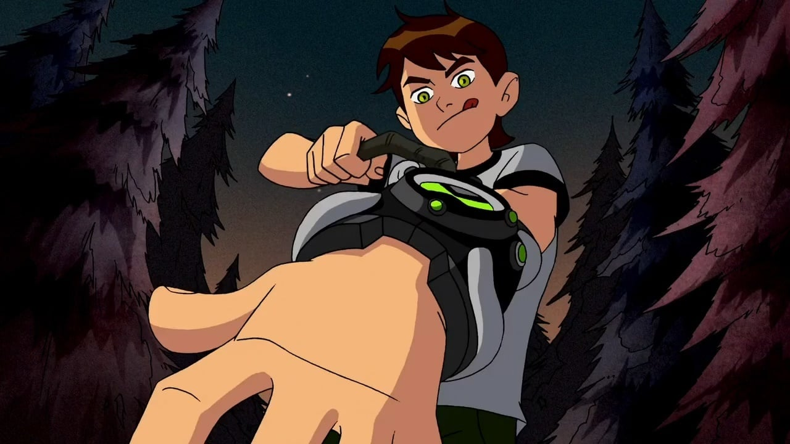

El Héroe con el Poder Alienígena

Ben Tennyson transformándose con el poderoso Omnitrix
Ben Tennyson es un niño de 10 años que encuentra un dispositivo alienígena llamado Omnitrix, que se adhiere a su muñeca y le permite transformarse en 10 aliens diferentes. Con estos poderes, debe aprender a ser un héroe y proteger a su familia y al mundo de amenazas alienígenas.
Transforma a Ben en diferentes aliens con poderes únicos
Un dispositivo alienígena creado por los Amaizighs
Permite acceder a 10 formas alienígenas inicialmente